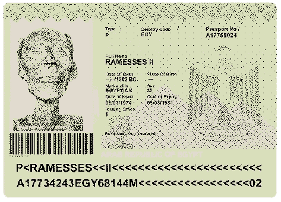
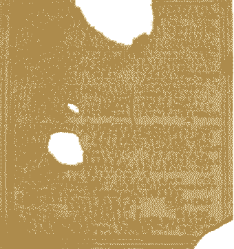
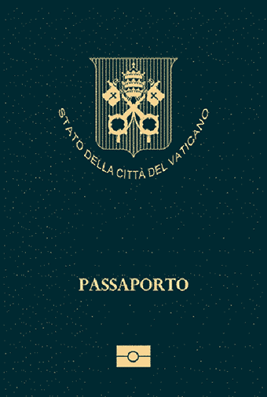
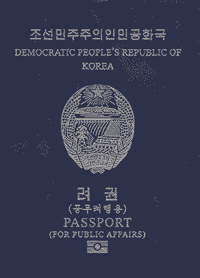
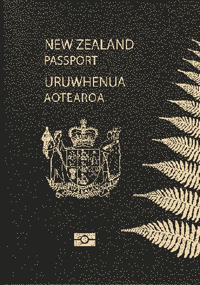

"Reisepas"
"Reisepas" On October 5, 1938, just before the start of WWII, Germany’s Reich Ministry of the Interior invalidates all passports held by Jews, became valid only after letter “J” has been stamped. By autumn 1938, all Jewish passports were stamped with red letter “J” for Jew. Jewish German passports with J are very rare and collectible. "Simultaneous pressure"
Figures that are printed in the same place on either side of the page and that overlap or complement each other exactly when the page is held up to the light. The new Swiss passport is a good example of this: the only difference is the black page number at the bottom right.
 "Tuvalu"
"Tuvalu" Tuvalu is one of the world's smallest countries, both in terms of population and land area. According to estimates, the population of Tuvalu is around 11,500 people. Given the small population size and assuming that most Tuvaluans hold Tuvaluan passports, it's safe to say that the number of Tuvaluans with passports would be close to the population figure, likely a few thousand at most. "Ink stamp"
An image that is applied with a stamp with ink. The size is virtually unlimited.
 "British Indian Passport"
"British Indian Passport" The British Indian passport was a passport, proof of national status and travel document issued to the British subjects of the British Indian Empire, British subjects from other parts of the British Empire, and the subjects of the British protected states in the Indian subcontinent (i. e. the British Protected Persons of the ‘princely states’). The title of state used in the passport was the “Indian Empire” which covered Aden, Ceylon, Pakistan, Bangladesh, Burma, and non French and Portuguese India. The use of the passport was discontinued in Aden and Burma in 1937, on becoming independent colonies, and in 1948 in the new Dominions of Ceylon, India and Pakistan. In India, The use of passports was introduced to the British Raj after the First World War. The Indian Passport Act of 1920 required the use of passports, established controls on the foreign travel of Indians, foreigners travelling to and within the Presidencies and Provinces of British India. "Fluorescent ink"
Ink that glows under ultraviolet light. The staff is a clear example.
 "1963 Churchill US passport"
"1963 Churchill US passport" Kennedy, President of the United States of America, under the authority contained in an Act of the 88th Congress, do hereby declare Sir Winston Churchill an honorary citizen of the United States of America. "Notebook stitch"
A stitch that holds the pages of the passport together in large loops. The thread can be seen in the center of the two center pages of the passport.  "Pharaoh passport"
In 1976, Ramesses II (also known as Ramesses the Great, was the third pharaoh of the Nineteenth Dynasty of Egypt), his remains were issued an Egyptian passport (nearly 3 thousand years after his death) so that he could be transported to Paris for an irradiated treatment to prevent a fungoid growth. "Letterpress"
A printing technique that can be compared to stamping. The pressure with which the ink hits the paper creates greasy, not sharply cut edges on the sides of the image, which is not always clearly visible even with a magnifying glass. "Malta Sovereign Military Order Passport"
The Sovereign Order of Malta is one of the oldest institutions of Western and Christian civilisation. A lay religious order of the Catholic Church since 1113. Founded in the 11th century in Jerusalem, the Sovereign Military Hospitaller Order of St John of Jerusalem of Rhodes and of Malta is a lay religious order of the Catholic Church and a sovereign subject of international law. The Sovereign Military Order of Malta passport is a travel document issued to officials and diplomats of the Sovereign Military Order of Malta(SMOM). Currently there are only 500 passports in use. "Shadow watermark"
A watermark with thick, gray lines.  "Diploma"
The most common document identifying a person in Ancient Rome was ‘diploma’, first issued in 52 AD Roman citizenship of discharged soldiers was identified by ‘military diploma’ This one is a military diploma from AD 80 etched and inscribed in Bronze. "Two tone line watermark"
A watermark with both thick and thin linen. Here you can clearly see the rosettes.  "Vatican"
The Vatican City passport is currently ranked 24th place on the Guide Passport Index. It provides a visa-free access to 156 countries. This makes it one of the more desirable passports in the world with a very high mobility score. Vatican City passport holders have visa-free and visa on arrival access to countries such as Brazil, Taiwan, United Kingdom, Chile and the entire European Union allowing almost instant travel worldwide. Vatican City passport holders do however require a visa to enter about 73 destinations in the world to countries such as India, the United States and China. "Microprinting"
With extremely small print composed lines or figures. The letters can only be distinguished through a magnifying glass. "Vatican Passport with the coat of arms of Pope Paul VI"
A Vatican passport (Italian: passaporto vaticano) is a passport issued by the Holy See or by Vatican City State. The state can issue normal passports for its citizens; the Holy See (see Legal status of the Holy See) issues personal, diplomatic and service passports. "Machine writing"
Text typed with a typewriter or printer. With modern techniques it is often difficult to see the difference between the two. "Fake Passports"
During the 1990s, North Korea leader Kim Jong-Il,
and his son and future leader Kim Jong-Un, used fake Brazilian passports to travel to Disneyland. "Sewn on the back"
In the spine of the passport, the thread with which the passport is bound can be seen in small stitches.  "North Korea"
The Democratic People's Republic of Korea passport, commonly referred to as the North Korean passport, is the passport which may be issued to North Korean citizens for international travel. Since the majority of North Koreans do not get opportunities to leave the country, DPRK passports are rarely issued. (11 "Sewn on the flat"
Sewn some distance from the back. The thread is therefore visible on all pages and the booklet has a tendency to close again on its own.  "Beautiful Passport"
New Zealand's passport is a true reflection of the country's Maori heritage and stunning landscapes. It incorporates traditional Maori designs and vibrant colors, making it an artful representation of the nation's cultural diversity. "Contrast strip"
To prevent a photo or text from being removed, a foil (plastic layer) is sometimes applied to a page. To hold the foil, the foil is sewn and folded. This creates a narrow 'contrast strip' of the same foil on the other side of the binding.